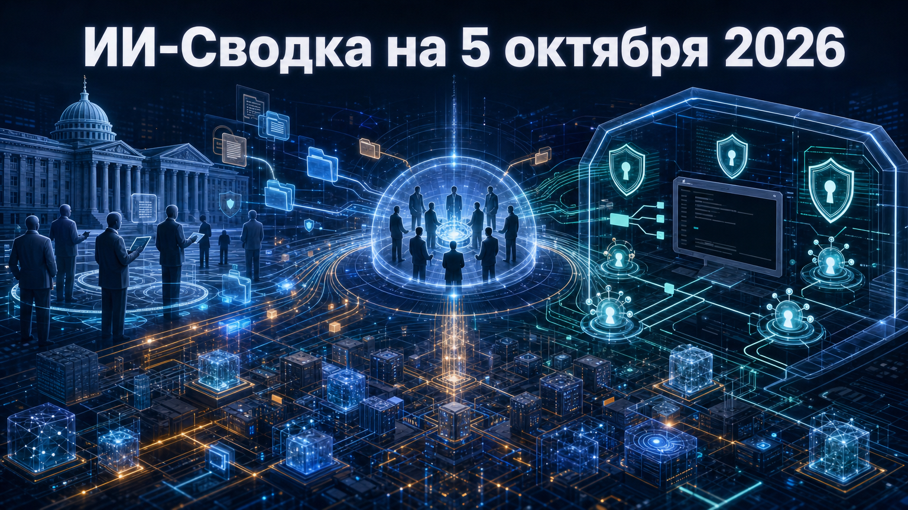

Новостей сегодня меньше, чем обычно
Свежая повестка объединяет два уровня управляемости ИИ: государственный и инженерный. В США объявлена межведомственная группа по рискам и возможностям «суперинтеллекта», а Anthropic выпустила обновление Claude Code, закрывающее несколько обходов правил доступа в агентной среде разработки.
Оба сюжета не меняют рынок мгновенно, но показывают общий сдвиг: автономность моделей всё чаще сопровождается отдельными контурами контроля — от федеральной координации до точной проверки Bash-команд, симлинков и плагинов.
Президент США Дональд Трамп объявил о создании межведомственной Super Intelligence Force. Как сообщает TechCrunch, группу должен возглавить директор национальной разведки Джей Клейтон; в предполагаемый руководящий состав также войдут представители Федеральной торговой комиссии, оборонного исследовательского контура и кадровой службы федерального правительства.
Группе отводится 120 дней на доклад о рисках и возможностях ИИ и подготовку планов реагирования на угрозы, связанные с «super intelligence». Это существенная конкретизация сентябрьского заявления о намерении создать AI Force: теперь названы структура, участники и срок работы. Однако доступный материал опирается на публичное заявление и сообщения СМИ; формальный мандат, юридические полномочия и официальный документ о создании группы пока не представлены в доступных источниках.
Anthropic выпустила Claude Code 2.1.289. В обновлении исправлены случаи, при которых правила deny/ask могли применяться неполно к составным Bash-командам, присваиваниям переменных окружения и обращениям через симлинки при sandbox auto-allow. Также устранена возможность пользовательского плагина менять описания инструментов входа у управляемого организацией MCP-сервера.
Одновременно плагины получили agent.spawn для запуска teammates, а API $.agent.list() — состояния idle и waiting. Для команд, строящих многоагентные сценарии разработки, это повышает наблюдаемость и управляемость исполнителей. Независимой оценки масштаба исправленных проблем в релизе нет, поэтому корректнее рассматривать изменения как профилактическое усиление границ разрешений, а не как подтверждение эксплуатации уязвимостей.